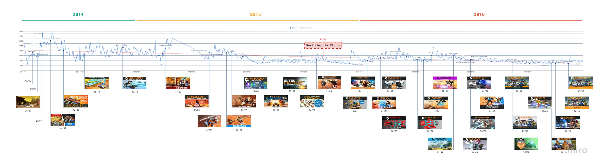
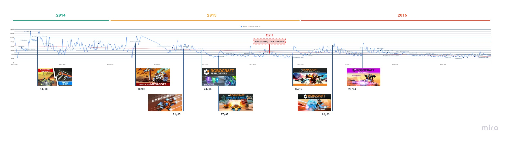
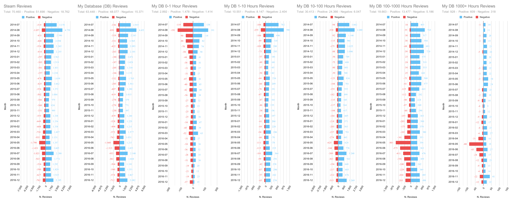

Going deep in the Steam reviews
Some time ago I decided to investigate the considerable drop of the Robocraft user base, a game I played a lot in the past, my goal was to identify the causes. The result is, unfortunately, a little confusing, but I was surprised by the potential of the tools I used, and I also enjoyed the experience so I decided to share my conclusions and how I reached them.
The game
To better understand some part of the article I have to start from a short description of the game itself, and the best way to do it is by quotes its official steam page:
Build insane, fully customisable robot battle vehicles that drive, hover, walk and fly in the free-to-play action game Robocraft. Add weapons from the future and jump in the driving seat as you take your creation into battle against other players online!
In practice, the player can use different weapons and parts to build vehicles to use against other players in 5v5 battles.
The game got through some big changes over the years, and this is the main reason why I am here writing this article. The first year the title was centralized about grinding your way to the top tiers, a lot of hours were needed to reach the maximum power and possibilities. After some changes, this is no more, now there are no limitations and everything that matters on the battlefield is the experience.
But better stop here, you got an idea about what is Robocraft, let's move on to the research.
Start from the playtime
I decided to start from the graph provided by the online site SteamDB and relate it with all the game updates in its first three years, gathered via the game's official steam news page.


Then, to be able to handle the data more easily, I focused my attention only on the most important ones.


From the resulting image I was able to draw the first conclusions:
- The drop in users is mainly imputable to 2015, more precisely around July, and seems to have started with the "Team Orders" update. Which makes sense because it is the first in a series that brings important changes to the game, to make it more competitive by reducing the difference between older and newer players. Which understandably irritated a part of the audience.
- All subsequent updates have preserved the state of the game but failed to improve it.
The player variable
At this point, I needed more data, so I turned again to Steam and downloading all user reviews at the time through the public APIs by using a PHP program made by myself, that was not too difficult to create, I just had some problems with the limits of 100 reviews at the time, but after some try and error I figured out a solution.
Apart from this little technical defiance, we are talking about players, analyze their opinions seemed the most logical thing to do.
After collecting the data I divided the players into 5 categories based on the amount of time spent in the game:
- From 0 to 1 hour.
- 1 to 10 hours.
- 10 to 100 hours.
- 100 to 1000 hours.
- 1000+ hours.
So I divided the reviews using these categories and created these charts.


Surprisingly, it seems that the largest demonstration of dissent cannot be identified in mid-2015 as previously hypothesized, although a significant number of negative reviews can still be noticed in that period, but instead in the middle of the following year. A moment characterized by another profound change, with the replacement of the currency-based economy, with a random one based on loot boxes. This negatively affected the most rooted users of the title, who therefore expressed their opinion through the reviews, most of which were negative.
Being able only to access the most updated version of a user's review, I cannot be sure that there was not a big wave of negativity also during 2015, but that of 2016 was sufficiently powerful to convince those who had possibly already negatively reviewed the game in the past, to update their opinion, thus changing the date.
Conclusion
The goal of this article is not to judge the work done by the Robocraft development team, but only to show the usefulness and information that can be drawn from using data such as Steam user reviews, if properly filtered and analyzed.
This is just the surface of what we can learn from studying Steam reviews. For example, by looking for combinations of words it is possible to try to catch the opinions of the players regarding a specific update, or a change in the game. Thanks to tools such as the public APIs, many things that were not previously possible are now at reach, not easily of course. But nothing comes for nothing.
An important thing, however, is to understand the value of time. In the previous chart, it can be seen that the biggest wave of negative reviews occurred in June 2016, although the update that I think was the cause of it, came out the previous month. Players must be given time to adjust to the changes and produce an opinion, which they will then express using one of the many tools that the Internet age has made available to us. In this article, I talked about the Steam reviews, but there are also forums, Twitter, Instagram, Facebook, etc ...
I discovered new tools that I had never used before, and that I didn't know could be so interesting to use, I will certainly treasure the experience for the future.
I hope the article has been useful if you want to repeat my steps in this directory you will find everything I used.
Until next, bye.
Matteo Graizzaro